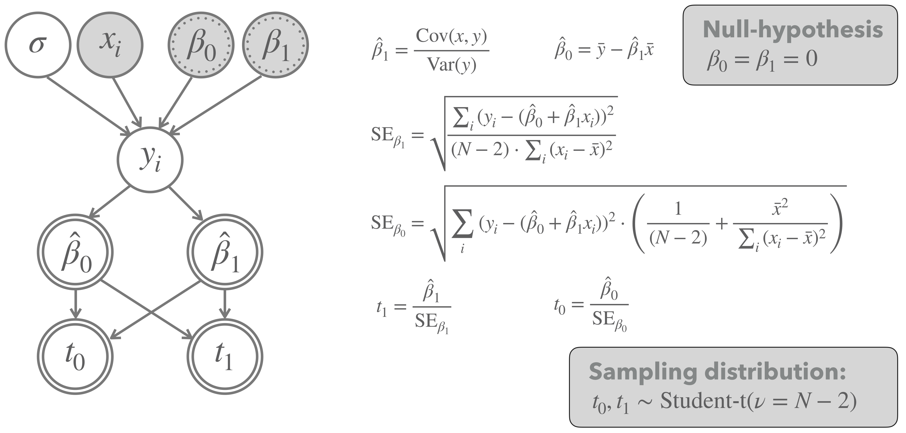

3.6 Testing coefficients
3.6.1 Bayesian approach
# get means and 95% HDI
Bayes_estimates <- tidy_draws_murder_data %>%
group_by(Parameter) %>%
summarise(
'|95%' = HDInterval::hdi(value)[1],
mean = mean(value),
'95|%' = HDInterval::hdi(value)[2]
)
Bayes_estimates## # A tibble: 3 x 4
## Parameter `|95%` mean `95|%`
## <fct> <dbl> <dbl> <dbl>
## 1 intercept -39.1 -24.6 -9.51
## 2 sigma 3.78 5.36 7.20
## 3 slope 4.34 6.53 8.533.6.2 Frequentist approach
Figure 3.2 shows a frequentist model for testing the hypotheses that the regression coefficients are equal to zero.

Figure 3.2: Frequentist model for testing whether regression coefficients are plausibly equal to zero.
We use this model to compute the test statics for the obsered data:
# observed data
y_obs <- murder_data %>% pull(murder_rate)
x_obs <- murder_data %>% pull(unemployment)
n_obs <- length(y_obs)
# best-fitting coefficients
beta_1_hat <- cov(x_obs, y_obs) / var(x_obs)
beta_0_hat <- mean(y_obs) - beta_1_hat * mean(x_obs)
# calculating t-scores
MSE <- sum((y_obs - beta_0_hat - beta_1_hat * x_obs)^2) / (n_obs-2)
S_xx <- sum((x_obs - mean(x_obs))^2)
SE_beta_1_hat <- sqrt(MSE / S_xx)
SE_beta_0_hat <- sqrt(MSE * (1/n_obs + mean(x_obs)^2 / S_xx))
t_slope = (beta_1_hat) / SE_beta_1_hat
t_intercept = beta_0_hat / SE_beta_0_hat
tibble(t_slope, t_intercept)## # A tibble: 1 x 2
## t_slope t_intercept
## <dbl> <dbl>
## 1 7.31 -4.19Calculate \(p\)-values (two sided!) for both of these values:
p_value_intercept = pt(t_intercept, df = n_obs -2) + 1-pt(-t_intercept, df = n_obs -2)
p_value_slope = pt(-t_slope, df = n_obs -2) + 1-pt(t_slope, df = n_obs -2)
tibble(p_value_intercept, p_value_slope)## # A tibble: 1 x 2
## p_value_intercept p_value_slope
## <dbl> <dbl>
## 1 0.000554 0.000000866We compare the manual calculation to the that of the built-in functions lm and glm:
##
## Call:
## lm(formula = murder_rate ~ unemployment, data = murder_data)
##
## Residuals:
## Min 1Q Median 3Q Max
## -9.2415 -3.7728 0.5795 3.2207 10.4221
##
## Coefficients:
## Estimate Std. Error t value Pr(>|t|)
## (Intercept) -28.5267 6.8137 -4.187 0.000554 ***
## unemployment 7.0796 0.9687 7.309 8.66e-07 ***
## ---
## Signif. codes: 0 '***' 0.001 '**' 0.01 '*' 0.05 '.' 0.1 ' ' 1
##
## Residual standard error: 5.097 on 18 degrees of freedom
## Multiple R-squared: 0.748, Adjusted R-squared: 0.7339
## F-statistic: 53.41 on 1 and 18 DF, p-value: 8.663e-07##
## Call:
## glm(formula = murder_rate ~ unemployment, data = murder_data)
##
## Deviance Residuals:
## Min 1Q Median 3Q Max
## -9.2415 -3.7728 0.5795 3.2207 10.4221
##
## Coefficients:
## Estimate Std. Error t value Pr(>|t|)
## (Intercept) -28.5267 6.8137 -4.187 0.000554 ***
## unemployment 7.0796 0.9687 7.309 8.66e-07 ***
## ---
## Signif. codes: 0 '***' 0.001 '**' 0.01 '*' 0.05 '.' 0.1 ' ' 1
##
## (Dispersion parameter for gaussian family taken to be 25.9779)
##
## Null deviance: 1855.2 on 19 degrees of freedom
## Residual deviance: 467.6 on 18 degrees of freedom
## AIC: 125.8
##
## Number of Fisher Scoring iterations: 2